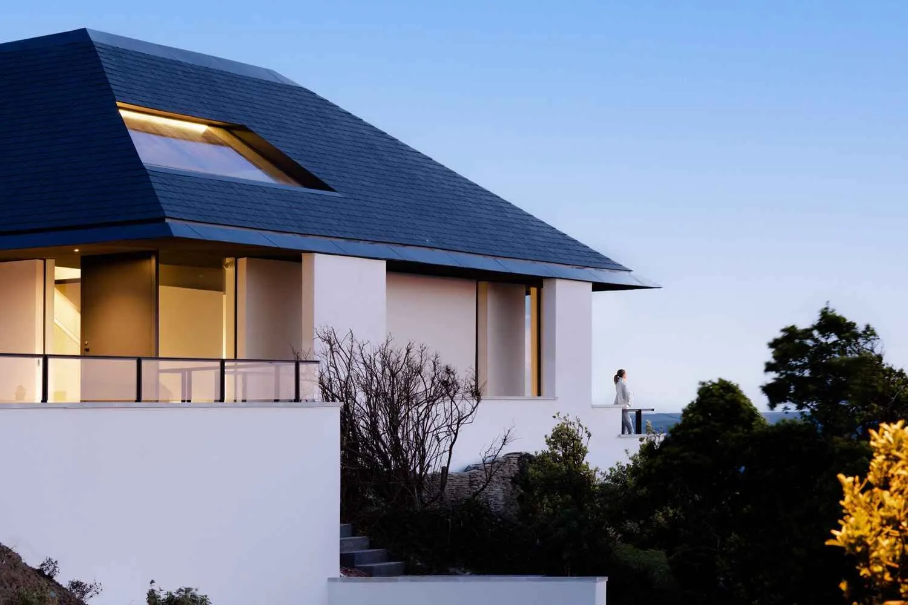
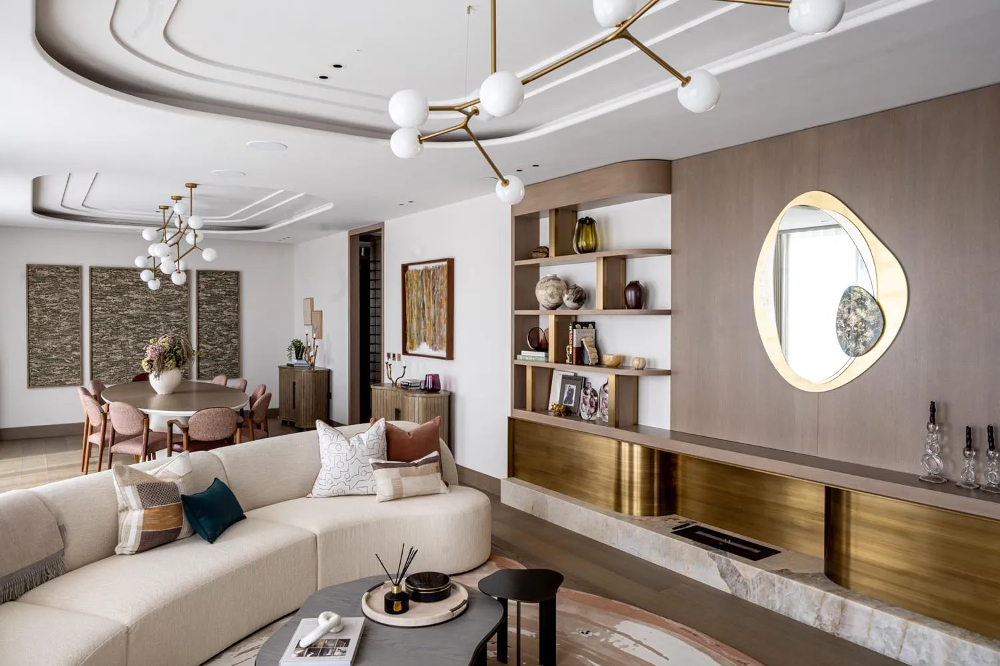

Journal · Updated periodically
Notes from the drawing board.
Writing about how we work, what we’re reading, and what we’re learning on site. Slower than a blog, longer than a post, indexed by year.

New build · May 2026 · 6 min read
Building a new house on land: where to begin.
Land, planning, budget and brief, in the order they actually matter.
Phil Coffey · May 2026
Read →
Recent writing.
Archive · 474 older entries →
How to design a house around natural light.
The studio’s first principle, made practical.

A house shaped by its site: designing in open country.
Letting the land, the weather and the light write the brief.

What a whole-house refurbishment really involves.
Beyond a new kitchen. What ‘whole-house’ actually means.

Planning permission in a conservation area.
What conservation areas protect, and what actually gets approved.

Knock down and rebuild, or renovate? How to decide.
When to keep an old house, and when to replace it.

Designing a new house that doesn’t look like a new build.
How to build new without the plastic.

Do you need an architect for a new house or a major renovation?
The honest answer, and where the fee pays for itself.

What to ask an architect at the first meeting.
The questions that tell you if it is the right studio.

How long does it take to design and build a house?
An honest timeline, stage by stage.